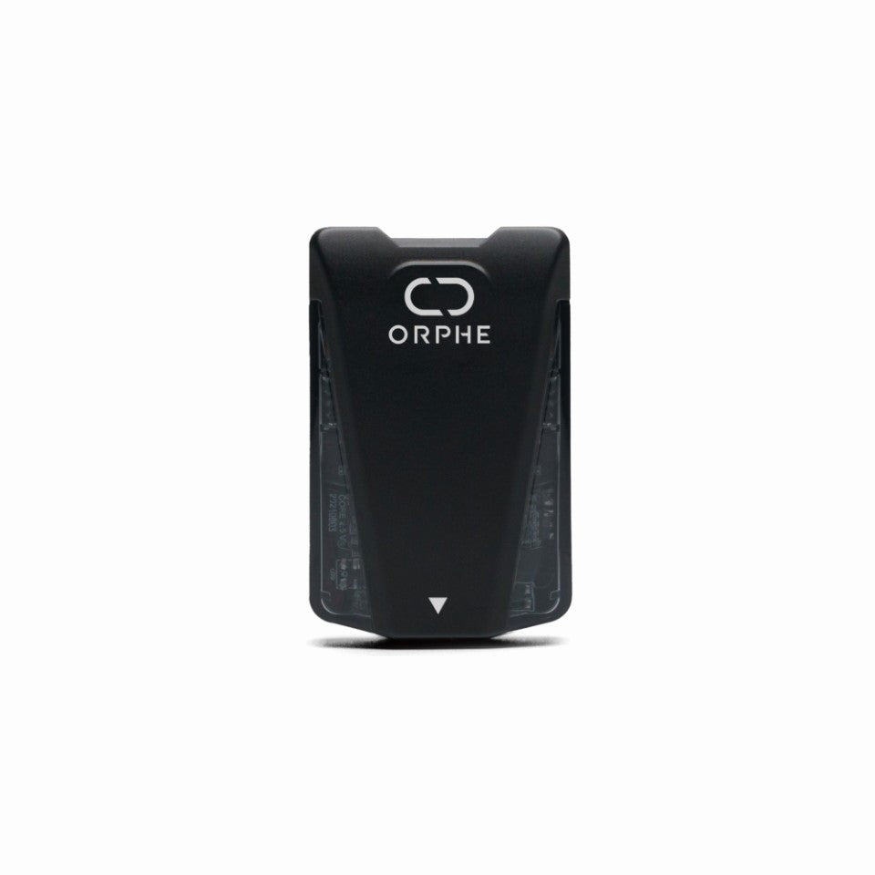
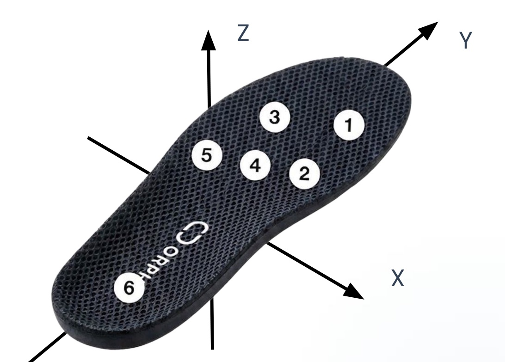
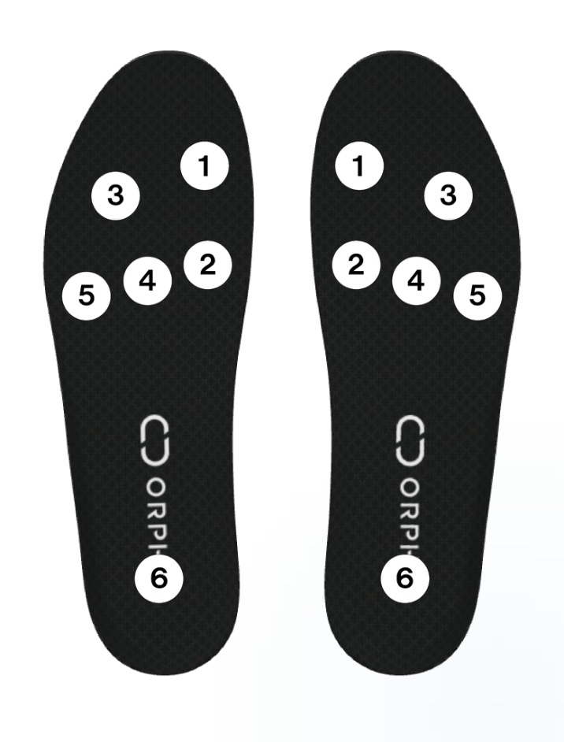

ORPHE CORE / ORPHE INSOLE 向け Web Bluetooth SDK
ORPHE-CORE-INSOLE.js
ひとつのAPIで、ORPHE COREもORPHE INSOLEも。 足に着けるIMUセンサー「ORPHE CORE」と、圧力センサー内蔵スマートインソール「ORPHE INSOLE」。どちらもこのSDKひとつで、Web Bluetooth経由でブラウザアプリにつながります。
ORPHE-CORE-INSOLE.jsとは？
COREとINSOLEのデータを、共通のSDKで。
ORPHE-CORE.jsとORPHE-INSOLE.jsを統合した共通SDKです。接続、再接続、購読、収録、デバイスコマンドを同じAPIで扱えるので、CORE向けに書いたコードをINSOLEへ、あるいはその逆へ、ほとんど変更なしに持ち運べます。
1つのクラス、2つのプロファイル、自動判別
new OrpheCoreInsole({ profile: coreProfile() }) または insoleProfile() で作ります。プロファイルを省略すると接続ダイアログに両方のデバイスが出て、デバイス名から種別を自動判別します。
再接続、FIFO収録、歩容解析
autoReconnect: true で自動再接続、useSharedBridge: true でタブ間共有を有効にできます。FIFO収録には対応FWが必要です。INSOLE向けの歩容解析とシミュレータも備えています。
旧ライブラリとの互換性
互換クラス Orphe / OrpheInsole は got* コールバックを保持します。toolkitが作るインスタンスは新APIなので、移行時は on() または attachLegacyCallbacks() を使います。
対応製品
2つのデバイス、1つのSDK。アイデアに合うセンサーを選べます。
足の甲や靴ひもに装着して動きを捉えるORPHE COREと、中敷きとして足裏圧まで計測するORPHE INSOLE。用途に合わせて選んでも、両方を同時につないでも、同じコードで扱えます。

靴に取り付ける小型モーションセンサー。
ORPHE COREは、靴ひもに取り付けるシューレースマウントや対応シューズで足に装着する6軸IMUセンサーです。生のセンサー値に加えて、歩数・歩容タイプ・ストライド・プロネーションなどの歩容解析結果をデバイス側で計算して送ります。
3軸加速度・3軸角速度をCORE 3.0では最大200Hzでサンプリングします。歩容イベントは歩単位で配送します。
加速度・角速度のレンジはSDKから切り替えられます。
IPX7防水、フルカラーLED、micro USB充電、約8時間駆動。
シューレースマウントで靴ひものある手持ちのシューズに取り付けるか、専用シューズを使います。両足の計測には2台必要です。
対応シューズとしてEASYRUN SHIBUYA 3.0とRUNWALK ORPHEが案内されています。CORE 2.0と3.0の両方に対応しますが、200Hzのデータ欠損検出はCORE 3.0のみです。

インソール内の圧力・モーションプラットフォーム。
ORPHE INSOLEは、通常の中敷きと交換して使えるスマートインソールです。片足6点の圧力センサーと6軸IMUで、足裏圧と足の動きをリアルタイムに計測します。
片足ごとに6点の圧力センサーと、3軸加速度・3軸角速度のデータを取得できます。
加速度・角速度・圧力の計測範囲はストア掲載値です。
サンプリングレートはアプリやモードによって異なる場合があります。
マグネットコネクタ充電に加え、別売りのORPHE MATによるワイヤレス充電に対応。
公式ストアでは現在、ORPHE INSOLE βは承認済み顧客・研究パートナー向けのEvaluation Kitとして掲載され、3ペアのインソールとiOSアプリを含むと説明されています。CES 2026 Best of Innovation（Sports & Fitness）を受賞しています。
何のデータが取れる？
必要なフィールドを on() で購読する。
パケットのパースはSDKが行い、ble.on('フィールド名', callback) で値を受け取ります。'*' を指定すると1サンプル全体が届きます。デバイスごとに使えるフィールドが違うので、下の2つのグループを参考にしてください。
モーション、歩容解析、デバイス制御
SENSOR_VALUES（生値）、STEP_ANALYSIS（歩容解析）、両方同時の3モードから選びます。
モーションセンサー値
加速度・角速度・クォータニオン・オイラー角。CORE 3.0では最大200Hzで、ゲームやビジュアル、サウンドに使えます。
歩容解析
歩数、歩容タイプ、方向、距離、カロリー、立脚・遊脚時間を、デバイスが1歩ごとに計算して送ります。
足部の指標
ストライド、プロネーション、接地時の足部角度、着地衝撃。ランニングフォームやリハビリの試作に。
デバイス制御
フルカラーLEDのパターンと明るさ、装着位置、センサーレンジ、姿勢リセット、デバイス情報の読み書き。
圧力、モーション、姿勢
リアルタイムセンサーストリームは SENSOR_VALUES を使い、streamingMode 1 / 3 / 4 で届くフィールドを選びます。歩容解析・FIFO収録は別の取得方式です。
圧力値
片足6chの生の圧力値とニュートン換算した荷重。利用可能な個体別校正係数で換算し、係数を利用できない場合は固定式を使います。
加速度
換算済みのXYZ加速度。動きの強さ、ステップのタイミング、インタラクション設計に。
角速度
BLEパーサーを自分で書かずに、足の回転運動を取得できます。
姿勢
既定のstreamingMode 4では、クォータニオンとオイラー角が圧力・モーションと一緒に届きます。
INSOLEの歩容解析
InsoleGaitでINSOLEの1歩ごとの歩容行を記録し、CSVを出力できます。
シミュレータ
実機なしで開発できます。実機と同じパース経路を通る仮想INSOLEです。


座標系と圧力センサーの配置
センサー座標系は右手系でZが上向きです。Yはつま先方向、Xはつま先方向に対して右、Zはインソール上面から上向き（静止時のaccZは約+1G）。圧力センサーは片足6点で図の1〜6の番号が付き、press.values[i] はセンサー i + 1 に対応します。
両方のデバイスで共通
ストリームの健全性
実測のパケットレートと、シリアル番号の欠落検出。BLEの取りこぼしとセンサーの挙動を切り分けられます。
ライフサイクルイベント
接続、切断、エラー、再接続の進行。何個でも購読でき、各呼び出しは解除関数を返します。
収録ヘルパー
FIFOはバッファ再取得で欠損を回復し、CSVを出力します。COREは20260905以降、INSOLEは20260510以降のFWが必要です。回復不能な欠損はonDataLossで通知し、stopOnLossの既定はfalseです。FW不明時は候補から除外されないため、対応は未確定です。
クイックスタート
どちらのデバイスでも接続して、ライブデータを表示する。
Web Bluetooth対応ブラウザで、HTTPSまたはlocalhostから開いてください。CDNのビルドを読み込み、OrpheCoreInsoleJS から OrpheCoreInsole を取り出します。プロファイルを省略すると接続ダイアログにCOREとINSOLEの両方が出て、選んだデバイスを自動判別します。
| デバイス | begin() の種別 / オプション | データストリーム |
|---|---|---|
| CORE | 'SENSOR_VALUES' |
生の加速度・角速度・クォータニオンを50〜200Hzで。 |
| CORE | 'STEP_ANALYSIS' |
歩数の増加に応じた歩容解析結果。通知パケットの頻度とは異なります。種別を省略したときの既定。 |
| CORE | 'STEP_ANALYSIS_AND_SENSOR_VALUES' |
両方のストリームを同時に。 |
| INSOLE | { streamingMode: 4 } |
角速度、加速度、圧力、クォータニオン。サンプリング100Hz、パケット送出50Hz。既定。 |
| INSOLE | { streamingMode: 3 } |
角速度、加速度、圧力。サンプリング200Hz、パケット送出50Hz。クォータニオンなし。 |
| INSOLE | { streamingMode: 1 } |
クォータニオン、加速度、角速度。サンプリング200Hz、パケット送出50Hz。圧力なし。 |
COREの歩容解析には、共通例のscript内を次のコードに置き換えます。センサー値も必要な場合はSTEP_ANALYSIS_AND_SENSOR_VALUESを指定します。
const { OrpheCoreInsole, coreProfile } = OrpheCoreInsoleJS;
const core = new OrpheCoreInsole({ profile: coreProfile() });
core.on("gait", (gait) => console.log(gait));
document.getElementById("connect").onclick = () =>
core.begin("STEP_ANALYSIS").catch(console.error);接続トグルと設定モーダルが欲しいときは orphe-core-insole-toolkit.js も読み込み、buildCoreToolkit() / buildInsoleToolkit() で接続UIを作れます（Bootstrap 5 が必要）。
詳細リファレンス: APIリファレンス（TypeDoc） / README の使い方 / リリースタグ一覧。
<button id="connect">Connect ORPHE CORE / INSOLE</button>
<pre id="sensor-data"></pre>
<pre id="pressure-data"></pre>
<script src="https://cdn.jsdelivr.net/gh/Orphe-OSS/ORPHE-CORE-INSOLE.js@v0.2.0/dist/browser/orphe-core-insole.js"></script>
<script>
const { OrpheCoreInsole } = OrpheCoreInsoleJS;
const ble = new OrpheCoreInsole();
ble.on("converted_acc", (acc) => {
document.getElementById("sensor-data").textContent =
JSON.stringify({ x: acc.x, y: acc.y, z: acc.z });
});
ble.on("press", (press) => {
document.getElementById("pressure-data").textContent =
JSON.stringify(press.values);
});
document.getElementById("connect").onclick = async () => {
try {
await ble.begin("SENSOR_VALUES");
console.log("connected:", ble.profile.kind);
} catch (error) {
document.getElementById("sensor-data").textContent = String(error);
}
};
</script>サンプルで試す
デバイス別のサンプルも、どちらでも動くサンプルも。
すべてのサンプルはCDN版のSDKで動く静的ページとして、別リポジトリ ORPHE-CORE-INSOLE.js-EXAMPLE で公開しています。ブラウザで開いてそのまま接続できます。
COREでモーションと歩容を扱う

LIGHT
CORE 1台をつないでLEDを制御します。Web Bluetoothが動くことを確認する最小のサンプルです。

CORETOOLKIT STARTER
buildCoreToolkit()で2台分の接続UIを作り、センサー値と歩容値をライブ表示します。自分のアプリの土台としてコピーできます。

FOOT ANGLE
デバイス内の歩容解析ストリームを使って、1歩ごとの接地時の足部角度を可視化します。

PRONATION
1歩ごとのプロネーションをゲージで表示します。ランニングフォームのフィードバックツールの小さなリファレンスです。

110m HURDLES
CORE 2台でその場で走ってハードルを跳びます。歩容解析とモーションデータで作った本格的なゲームループです。

PINGPONG
足を振ってボールを打ち返します。角速度でヒット判定とタイミングを取ります。
INSOLEで圧力とバランスを扱う

Showcase
製品仕様、6ch圧力ヒートマップ、IMUチャート、クォータニオン3D表示、CSV収録、コードスニペット。デバイスなしでもデモ再生で動きます。

Gait Report
片足20歩を記録し、平均±SD、左右非対称性、ばらつき、接地パターン内訳のレポートをリアルタイムに作ります。

Calibrated Pressure
6chの圧力をニュートン単位の荷重でグラフ化します。接続時に取得した個体別校正係数を利用できる場合はその係数を使い、利用できない場合は固定式で換算します。

FIFO Guide
FIFOの入口。リアルタイムとの違い、デバイスバッファが約30秒である理由、CSV出力前のシリアル連続性の確認方法を学べます。

Balance Sway
圧力中心の軌跡、動揺指標、左右荷重をデモストリーム付きで表示します。医療機器ではありません。

Music Shoe
インソールを手に持って演奏します。姿勢でゲートするヒット、ループステーション、ジェスチャー記録ラボ。マウスやキーボードでも遊べます。
どちらのデバイスでも動く
スロットごとにCOREかINSOLEかを選べるので、手元にあるハードウェアで同じページが動きます。

VISUALIZE
最大2台の加速度・角速度（INSOLEなら圧力も）をリアルタイムにグラフ化します。データを最初に眺めるのにおすすめです。

Sensor Dashboard
1台または2台をつなぎ、すべてのフィールド、クォータニオン姿勢、左右の割り当てを1画面で確認します。

Terminal
BLEキャラクタリスティックの読み書き、通知の生バイト表示、取得値のエクスポートができます。

UDON
その場で足踏みしてうどんをこねます。足ごとにCOREかINSOLEを使い、1歩ごとの強さ・左右バランス・ペースを採点します。

サンプルギャラリー
カテゴリ、デバイス（CORE / INSOLE）、難易度、キーワードで全サンプルを探せます。ゲーム、バーチャルスポーツ、研究ツールなど。

APIドキュメント
OrpheCoreInsole、プロファイル、コマンド、収録ヘルパー、toolkit関数のTypeDocを参照できます。
ORPHE-CORE.js / ORPHE-INSOLE.js から移行する
既存APIの使い方に合わせて移行する。
new Orphe() / new OrpheInsole() を直接使う場合は同名の互換グローバルを利用できます。v0.2.0以降のtoolkitが作る cores / insoles / orpheCore は OrpheCoreInsole です。on() / onEvent() へ移行するか、旧コールバックに attachLegacyCallbacks() を使ってください。scriptのURL差し替えだけで全アプリが移行できるわけではないため、READMEの対応表も確認してください。
| ORPHE-CORE.js / ORPHE-INSOLE.js | ORPHE-CORE-INSOLE.js |
|---|---|
new Orphe(0) / new OrpheInsole(0) |
new OrpheCoreInsole({ profile: coreProfile(), id: 0 }) / insoleProfile() |
ble.setup() |
不要 |
ble.gotAcc = (acc) => {…} |
ble.on('acc', (acc) => {…}) |
ble.onConnect = () => {…} |
ble.onEvent('onConnect', () => {…}) |
ble.setLED(1, 0) / resetMotionSensorAttitude() |
ble.commands.setLED(true, 0) / ble.commands.resetAttitude() |
OrpheInsoleFifo / OrpheInsoleGait / OrpheInsoleSimulator |
FifoRecorder / InsoleGait / createInsoleSimulator() |
作れるもの
COREとINSOLEが想定する用途の周辺をプロトタイプ化できます。
COREの動き・歩容データはゲームや身体表現、INSOLEの足裏圧はバランスや荷重の分析に向いています。両方をつなげば、動きと接地を同時に観察するリサーチツールも作れます。
身体で操作するゲームとスポーツ
走る、跳ぶ、蹴る、振る。足の動きをコントローラーにしたバーチャルスポーツ、リズムゲーム、トレーニングのフィードバック。
バイオメカニクスのデータセット
同期したモーション・歩容・圧力ストリームを記録し、検証、探索的分析、AIデータセットの作成に使えます。
労働安全の点検
転倒、スリップ、つまずき、疲労に関わる動作信号を、より大きな安全システムにつなぐ前に探索できます。
デバイス点検
デバイス状態、パケットの健全性、左右の割り当て、データストリームのデバッグ用ダッシュボードを作れます。
Beta notice
ORPHE-CORE-INSOLE.jsは現在ベータ版として提供しています。
ドキュメントとチュートリアルは整備中です。Web BluetoothにはChromeまたはEdge（デスクトップ / Android）が必要です。SafariとFirefoxは非対応で、iOSではBluefyなどのWeb Bluetooth対応ブラウザを使ってください。
利用方針
教育・研究・試作・非商用アプリは無償利用。有料・商用利用は別途契約が必要です。
ORPHE-CORE.js / ORPHE-INSOLE.jsの方針に従い、ORPHE-CORE-INSOLE.jsは教育・ワークショップ、大学・研究機関などでの非商用研究、個人制作、試作・社内検証、ORPHE CORE / INSOLEを使った無償アプリ・非商用サービスについて、改変を含めて無償で利用できる方針です。
無償で使える範囲
教育・ワークショップ、大学・研究機関での非商用研究、個人制作、試作・社内検証、無償の非商用サービスでの利用を認めています。
商用利用
有料アプリ、有料サービス、商用SDK組み込み、受託製品、事業サービスには、ORPHEとの別途商用契約が必要です。
バージョンの範囲
このページはORPHE-CORE.js v1.4.0以降の方針に従います。ORPHE-CORE-INSOLE.jsのすべてのリリースは同じ利用方針です。詳細はリポジトリのLICENSE.mdを参照してください。
著作権とライセンス
Copyright (C) 2025–2026, Tetsuaki BABA and ORPHE Inc. 許可される用途と商用契約の要件は利用方針を参照してください。